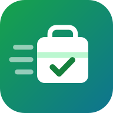

Курьер ZalPOS
Условия использования приложения
Редакция 2.0 от 13 ноября 2026 г.
Коротко: доступ к приложению даёт ваше заведение. Условия работы и оплаты устанавливает заведение, а не мы. Геопозиция передаётся только во время смены. Данные хранятся на серверах в России.
1. Кто мы
Приложение «Курьер ZalPOS» — часть программы для заведений общественного питания ZalPOS. Правообладатель программы и оператор сервиса — индивидуальный предприниматель Бикоев Константин Николаевич, ИНН 151211052290, ОГРНИП 326150000028364, электронная почта zalpos@mail.ru (далее — Сервис).
Заведение (кафе, ресторан, бар и т.п.) — клиент Сервиса: оно пользуется программой ZalPOS, в том числе для своей доставки, и подключает к ней своих курьеров.
2. Как предоставляется доступ
- Самостоятельной регистрации в приложении нет. Учётную запись курьера создаёт администратор вашего заведения: он указывает ваше имя, адрес электронной почты, телефон и вид транспорта.
- Учётная запись привязана к одному заведению: вы видите заказы только этого заведения. Если вас добавили несколько заведений, при входе вы выбираете, в каком работаете сейчас.
- Заведение может в любой момент закрыть вам доступ — вход прекращается сразу.
- Учётная запись — только ваша. Не передавайте другим людям телефон с открытым приложением и коды из писем.
3. Ваши отношения с заведением
- Условия работы — оплату, график, порядок расчётов, работу с наличными — устанавливает заведение по договору между вами и заведением (трудовому или гражданско-правовому).
- Сервис не является вашим работодателем или заказчиком, не является службой доставки, не определяет ваш график и оплату, не платит курьерам и не принимает оплату от гостей. Сервис только предоставляет программу.
- Заработок, километры и суммы в приложении — справочный расчёт по ставкам, которые указало заведение. Это не платёжный документ; окончательный расчёт — по договору с заведением.
- Пользование приложением для курьера бесплатное.
4. Вход и электронная подпись
- Вход — по адресу электронной почты и одноразовому коду из 6 цифр, который приходит в письме. Код действует 10 минут, повторно его можно запросить не раньше чем через минуту.
- Отметка согласия с этими условиями вместе с вводом кода из письма — это простая электронная подпись (ст. 5 Федерального закона от 06.04.2011 № 63-ФЗ «Об электронной подписи»). Нажимая «Получить код» и вводя код, вы подписываете согласие на обработку персональных данных в форме электронного документа (ч. 4 ст. 9 Федерального закона от 27.07.2006 № 152-ФЗ «О персональных данных») и принимаете эти условия.
- Как доказательство согласия мы храним дату и время, IP-адрес, адрес почты и номер редакции условий.
5. Согласие на обработку персональных данных
Ставя отметку, вы даёте согласие ИП Бикоеву К. Н. и вашему заведению на обработку ваших персональных данных — свободно, своей волей и в своём интересе (ст. 9 Федерального закона № 152-ФЗ).
| Какие данные | имя, адрес электронной почты, телефон, вид транспорта (их вносит заведение); номер курьера; история поездок — время, километры, суммы оплаты у двери, наличные на руках; геопозиция телефона во время смены; модель устройства и IP-адрес при входе. |
|---|
| Зачем | вход в приложение; показ заказов, маршрута и адреса доставки; связь с заведением и гостем; отображение курьера на карте заведению и гостю; расчёт поездок и заработка по ставкам заведения; защита учётной записи. |
|---|
| Что с ними делаем | сбор, запись, систематизация, хранение, уточнение, использование, передача (предоставление) заведению и гостю в объёме ниже, обезличивание, удаление и уничтожение — с использованием средств автоматизации. |
|---|
| Кому передаются | вашему заведению — всё перечисленное; гостю — ваше имя, номер курьера и ваша точка на карте только по его заказу и только пока вы его везёте. При показе карты сервиса «Яндекс Карты» ему передаются только координаты точек маршрута, без имени и телефона. |
|---|
| Где хранятся | на серверах в Российской Федерации. За рубеж не передаются. |
|---|
| Срок | согласие действует, пока у вас есть доступ к приложению, и до его отзыва. |
|---|
6. Геопозиция — только во время смены
- Приложение передаёт местоположение телефона, только пока вы на линии (нажали «Выйти на линию»). Закончили смену — передача прекращается.
- Последняя точка хранится до конца смены, точки по заказу — до вручения или закрытия заказа. В истории поездок остаются только километры, без координат.
- Закончить смену нельзя, пока у вас есть невручённые заказы: передайте их заведению или вручите.
7. Данные гостей
- Адрес и телефон гостя видны вам только по взятому заказу и только для его доставки.
- Нельзя копировать, сохранять, передавать данные гостей или использовать их для других целей.
8. Безопасность
- Соблюдайте Правила дорожного движения. Не пользуйтесь телефоном за рулём во время движения — маршрут и навигатор настройте до начала поездки.
- Приложение — помощник: решение, как ехать, принимаете вы с учётом дорожной обстановки.
9. Ваши права
- Узнать, какие ваши данные обрабатываются, уточнить или исправить их — через администратора заведения или по почте zalpos@mail.ru.
- Отозвать согласие — написать заведению или на zalpos@mail.ru. После отзыва доступ к приложению закрывается; данные, которые закон или договор с заведением обязывают хранить, хранятся в пределах этих сроков.
- Когда заведение удаляет вашу учётную запись, имя, почта и телефон стираются; в истории поездок остаётся только номер курьера.
- Обжаловать действия с вашими данными в Роскомнадзор или в суд.
10. Сервис и его ответственность
- Сервис постоянно улучшает приложение и делает всё, чтобы оно работало без перерывов, но не гарантирует, что связь, карта или геолокация телефона будут доступны всегда.
- Сервис не отвечает за условия работы и расчёты между вами и заведением.
11. Изменение условий
Если условия изменятся, приложение покажет новую редакцию и попросит подтвердить её снова. Без подтверждения выйти на линию нельзя.
12. Контакты
ИП Бикоев Константин Николаевич, ИНН 151211052290, ОГРНИП 326150000028364, zalpos@mail.ru. По вопросам работы и оплаты — к администратору вашего заведения.
Вернуться в приложение